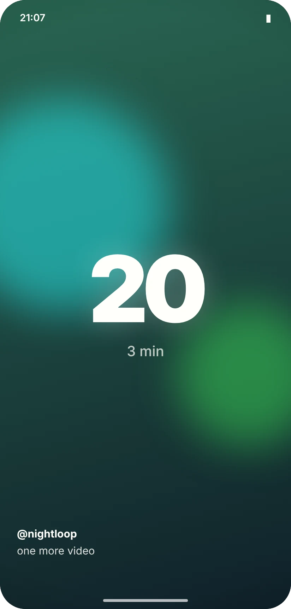
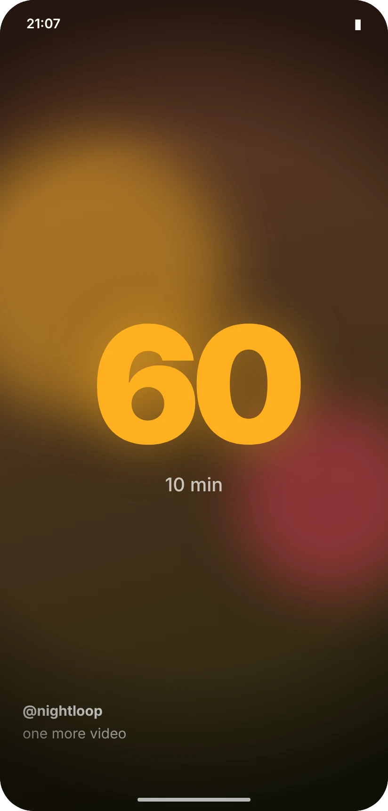
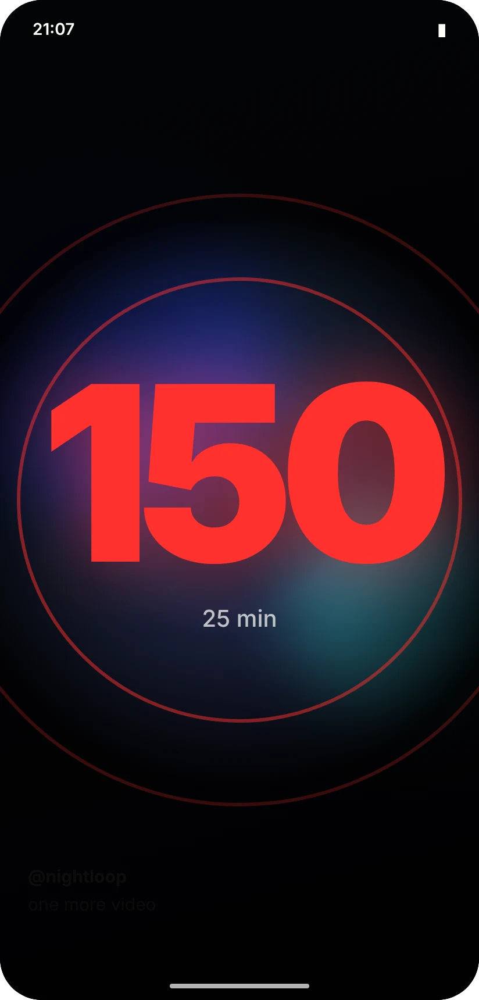
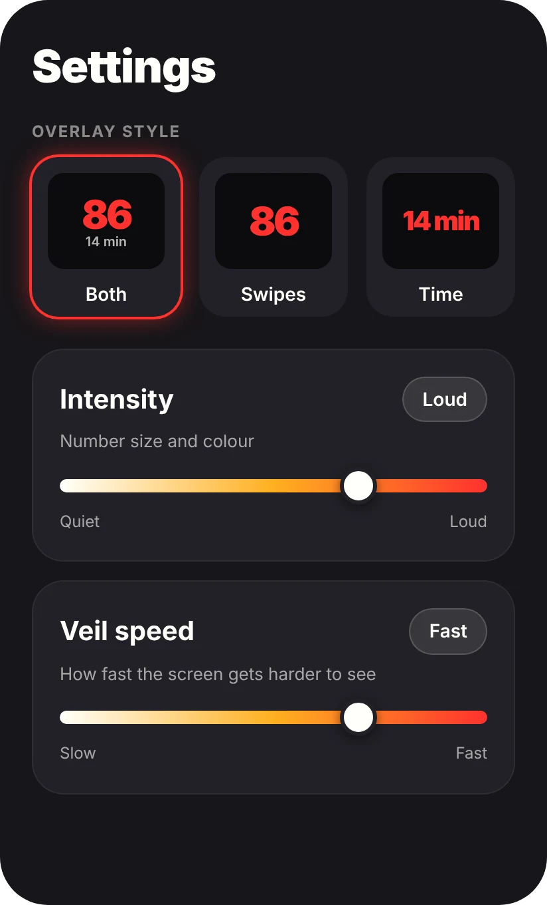

Harder to see. Never blocked.
A dark veil closes in from the edges as the count climbs. The number stays on top, and the middle never closes completely.
It closes in with each swipe.
Edges go dark first. At the end only a small clear patch is left, about a quarter of the screen across. The veil is black, and the number is drawn above it, so the count stays easy to read.



You set the pace.
Veil speed sets how fast it closes in, from Slow to Fast. Obstruction max sets how far it goes. At 0 there is no veil at all.
Grace swipes come first. Until they run out there is no number and no veil.


What the veil does not do.
It does not block touches. They pass through to the app underneath, so there is no trap and no button to find.
It draws only over the apps you picked. It does not touch system screens or calls.
It is not a lock or a time limit. You can turn Tally off at any time.
Hear when Tally is ready.
One email when it is available. Nothing else.
Your address goes into a Google Sheet kept by Jergusino and is used only to tell you when Tally is ready. More on your email.